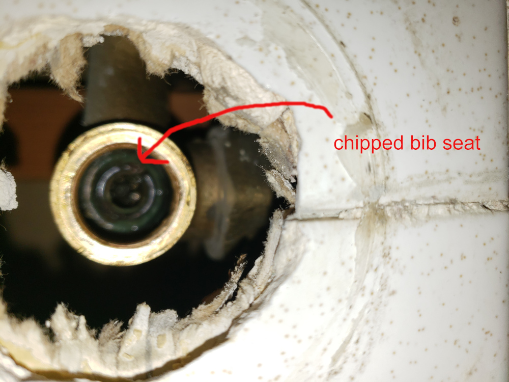
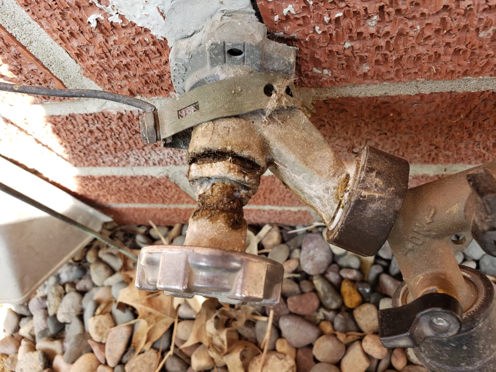
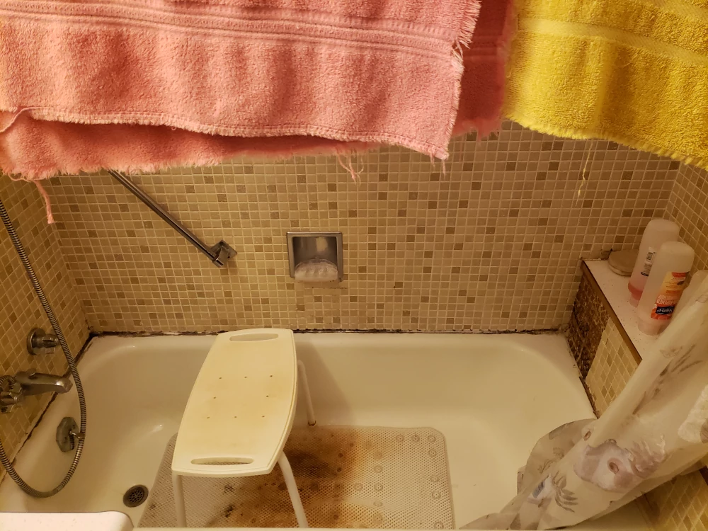
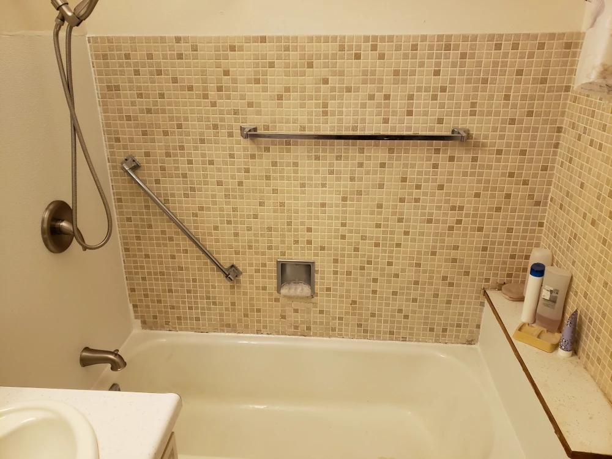
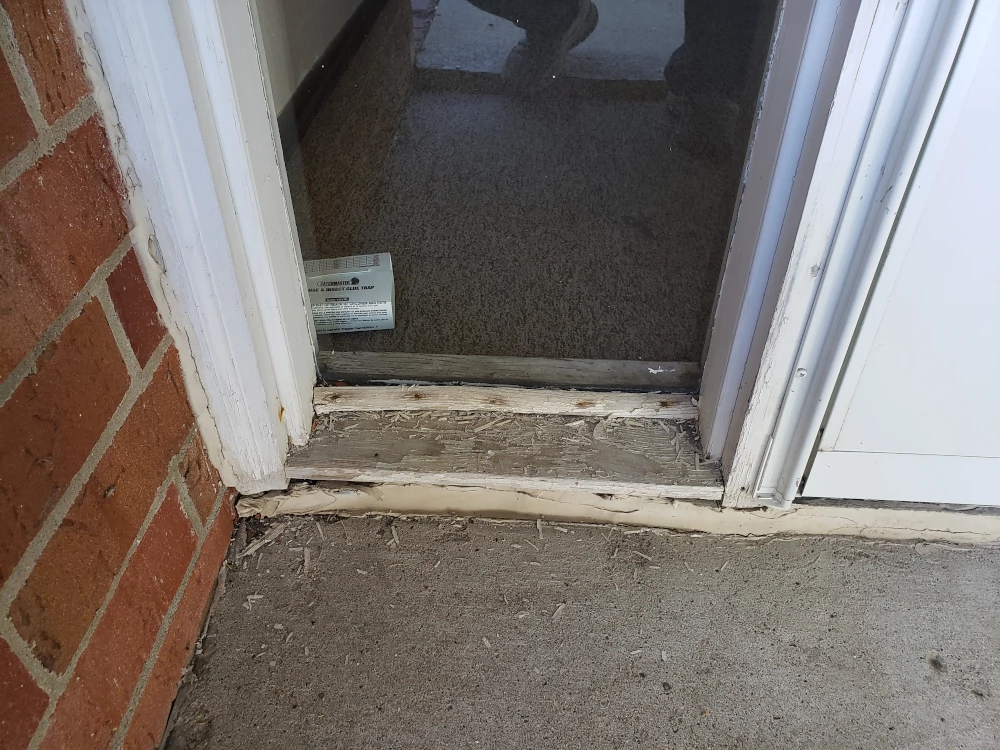
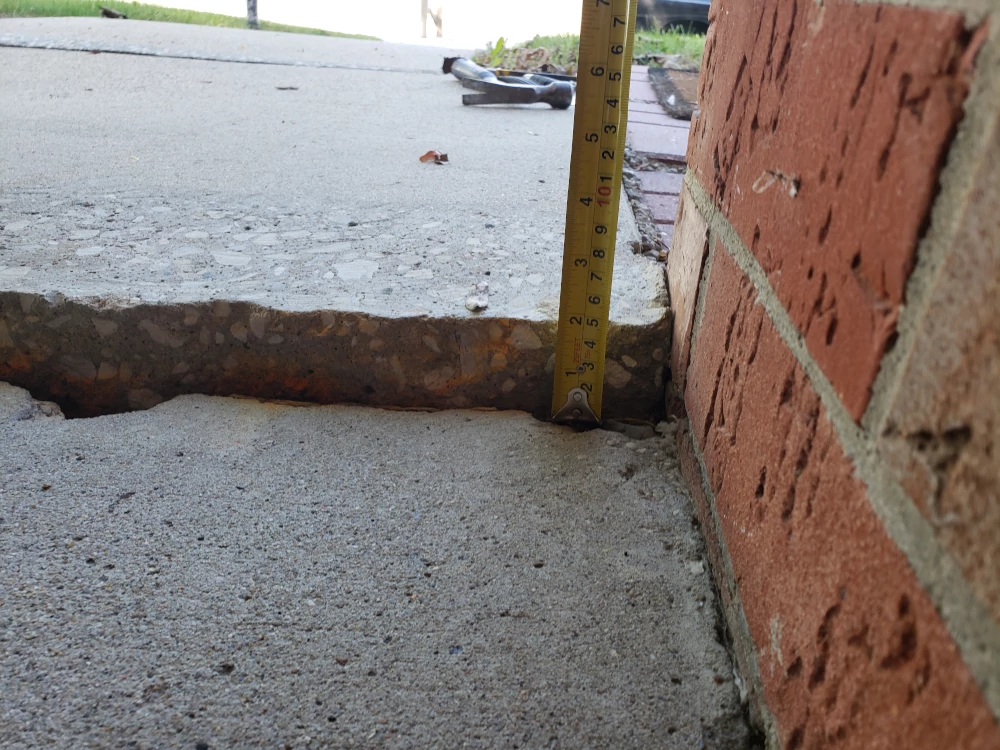
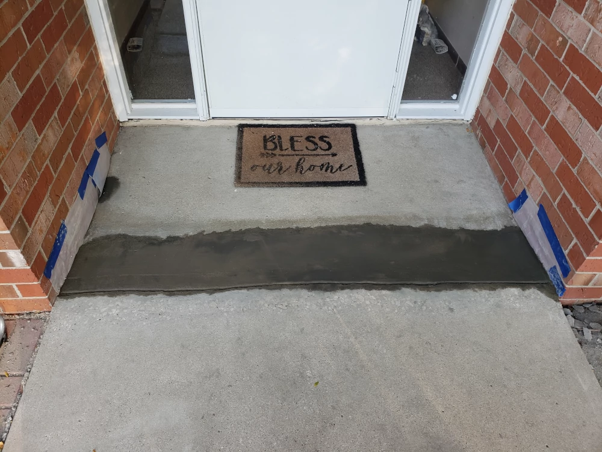
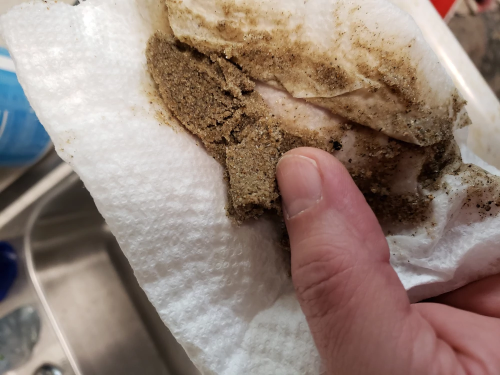
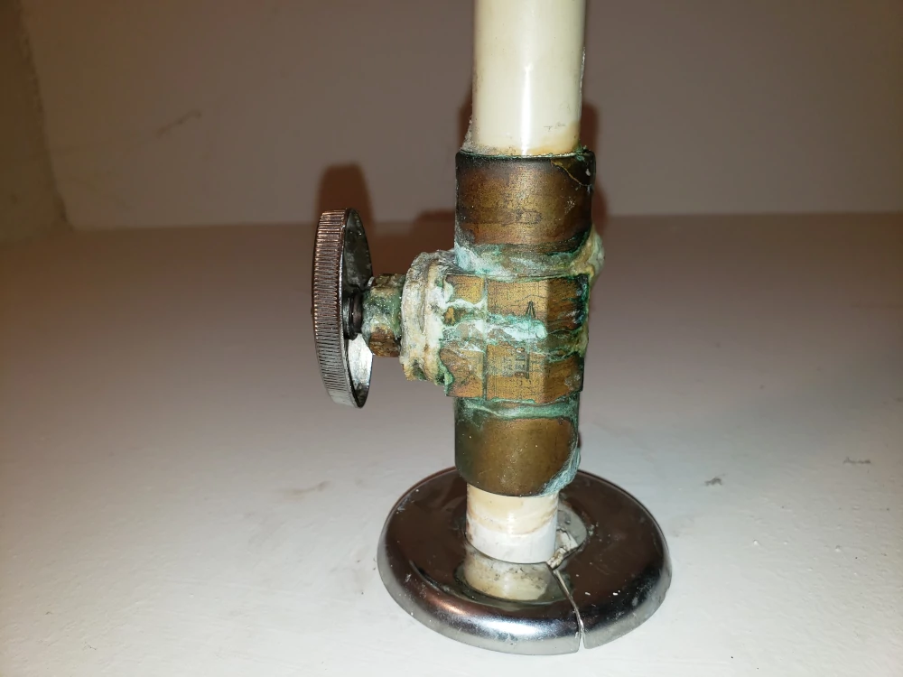

Apt.2 Hot water side of bathtub faucet. Very pleased to find parts for this.
Hose bib north side. Has a slow leak. Someone attached a grounding strap to it. Poorly. This is a bad idea for a few reasons. Something I still need to fix.
Apt.4 shower before
Apt.4 shower after
Sidelights at front entrance.
Sidewalk front entrance.
Front entrance now. I need to go back and replace the sealant at the base of the door set.
Apt. 205 Maybe a third of the sand flushed out of the cold water line in the kitchen. This was over 2 weeks after I flushed them the first time. I can't believe how much sand and mud I have flushed out of these water lines.
Valve to water heater in laundry room of the 200 unit. Something I haven't fixed yet.
